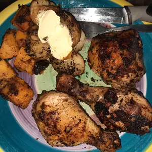

Lemon Garlic Chicken

This delicious recipe is a must try! Whether your cooking
for two, or cooking for the fam. This Lemon Garlic Chicken is perfect
in every scenario. A quick and easy one to!
Cook: 15 Mins
Total: 25 Mins
Prep: 10 Mins
Servings: 3
Yield: 3 Servings
Ingredients
- 2 tablespoons butter
- 3 skinless, boneless chicken breast halves
- 1½ teaspoons salt
- 1½ teaspoons ground black pepper
- 2 tablespoons garlic powder
- 1 lemon, juiced
Steps
Step 1
Melt butter in a skillet over medium-high heat.
Step 2
Season chicken with salt and pepper; place in the melted butter. Cook chicken,
flipping frequently, until browned, about 5 minutes. Sprinkle 1 tablespoon garlic powder over chicken;
flip and sprinkle 1 tablespoon garlic powder on second side. Cook each side for 2 minutes.